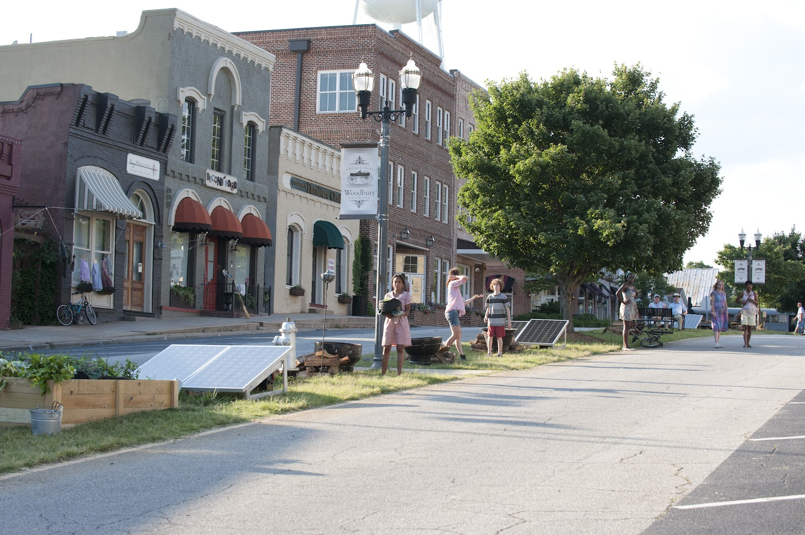
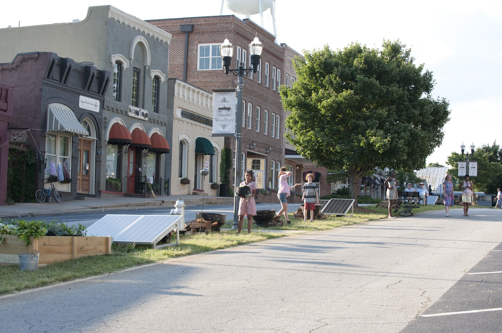

Empezamos a escuchar jadeos y ruidos de zombies, miramos hacia atrás y viene una horda caminando a paso bastante rápido, empezamos a chillar para que por piedad nos abran y después de mucho suplicar nos abren.
Es como un pueblo, con parques, casas, huertos con frutas y verduras y sobre todo…
…mucha gente, mujeres, niños, ancianos…
 
